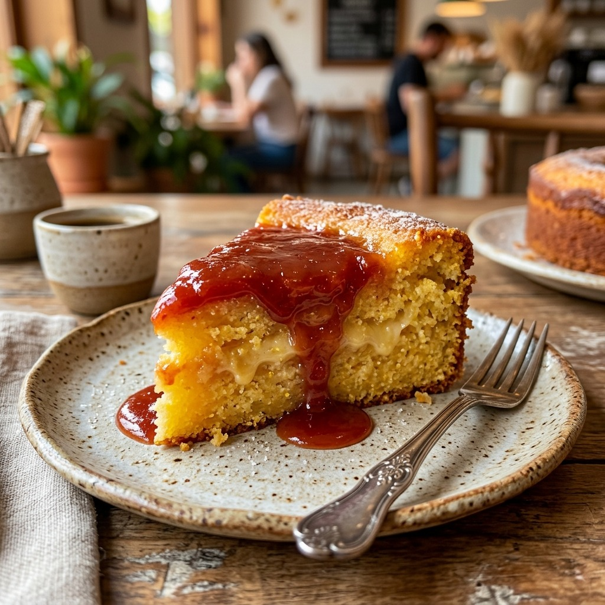

Bolos caseiros que derretem o coração
Feitos à mão, com ingredientes selecionados e muito carinho. Peça o seu bolo de ninho, chocolate ou vulcão e receba fresquinho, direto de Santíssimo para sua casa.
Nosso Cardápio - Sabores que viciam
Cada bolo é preparado artesanalmente, com receitas de família e ingredientes de primeira qualidade. Toque nos cards para girar em 3D.
 Mais Pedido ★
Mais Pedido ★
Bolo Vulcão de Ninho com Morango
Massa aveludada amanteigada, transbordando uma erupção de brigadeiro cremoso de Leite Ninho e morangos frescos selecionados.
Vulcão de Ninho com Morango
 Chocolatudo
Chocolatudo
Bolo Vulcão de Chocolate Belga
Massa fofinha de cacau 100%, recheada até o topo com cascata cremosa de brigadeiro gourmet e granulados crocantes.
Vulcão de Chocolate Belga
 Clássico do Coração
Clássico do Coração
Cenoura com Brigadeiro Vulcão
A receita tradicional da infância elevada à perfeição: massa fofíssima cor de sol com uma piscina de brigadeiro caseiro.
Cenoura com Brigadeiro Vulcão
 Queridinho
Queridinho
Bolo de Churros com Doce de Leite
Massa perfumada com canela e açúcar mascavo, coberta com farta camada de doce de leite artesanal cremoso e bicos decorados.
Bolo de Churros com Doce de Leite
 Especialidade
Especialidade
Red Velvet com Cream Cheese
Massa aveludada vermelha rubi, recheada com frosting cremoso de cream cheese e geleia artesanal de frutas vermelhas.
Red Velvet com Cream Cheese

Receita da VovóFubá Cremoso com Goiabada
Textura única que forma uma camada cremosa no meio da massa, coberto com calda quente de goiabada cascão mineira.
Fubá Cremoso com Goiabada
Quem prova, aprova
A satisfação dos nossos clientes é o ingrediente principal em cada fornada. Veja o que dizem no Google sobre nossos bolos.
"O melhor bolo de Santíssimo sem dúvidas! Pedi o bolo vulcão de ninho com morangos pro aniversário da minha mãe e todo mundo ficou impressionado com a cremosidade da calda. Super caprichado!"
Bianca Gonçalves
Avaliação no Google"Massa super fofinha, molhadinha e fresquinha! Dá pra sentir que é feito na hora e com muito amor. Entrega super rápida pelo iFood e o bolo chegou perfeito e quentinho."
Maria Eduarda
Avaliação no Google"Atendimento impecável pelo WhatsApp e o bolo de chocolate com calda vulcão é um espetáculo à parte. Já virou tradição dos fins de semana aqui em casa, recomendo de olhos fechados!"
Camila Santos
Avaliação no GoogleAcompanhe no Instagram
Bastidores, promoções e os bolos mais fofos da semana. Vem ver de pertinho!


Vem buscar ou receba em casa
Nossa cozinha artesanal fica no coração de Santíssimo, Zona Oeste do Rio de Janeiro. Venha nos visitar para retirar seu bolo quentinho ou peça no conforto do seu lar!
Espaço acolhedor preparado com todo o carinho para produzir os bolos caseiros mais amados da região. Atendemos retirada e entregas rápidas via iFood ou WhatsApp.
Endereço da Loja
Est. do Lameirão, 1447 - Lj D - Santíssimo, Rio de Janeiro - RJ, 23092-031
Ver no Google MapsHorário de Funcionamento
Segunda a Sábado: 09:00 às 20:00 | Domingo: 09:00 às 15:00
Vai ficar só na vontade?
Faça seu pedido agora e surpreenda alguém (ou você mesma!) com um bolo caseiro inesquecível... Fresquinho, fofinho e com aquela calda generosa.